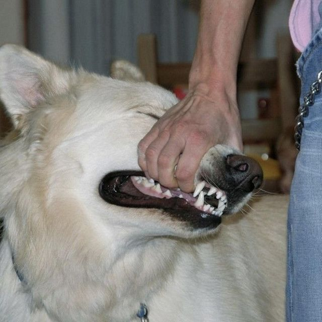

Thamer Almutairi
Pentester & Developer

eCPPTv3
eWPTXv3
CRTA
eJPTv2
PT1
Bio
I’m a penetration tester and developer focused on understanding how real-world attacks actually happen. I’m mostly into Red Teaming and learning how attackers move through systems in real environments.
I look into malware development sometimes, mainly to understand how it works rather than to specialize in it. Outside of security, I’m into chess, bodybuilding, and gaming.